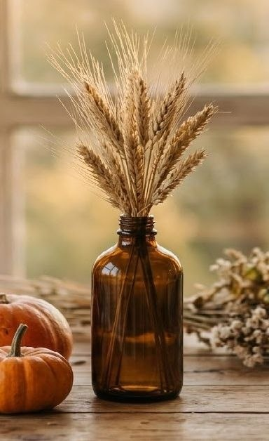

Особливо люблю осінь за її неповторні кольори, затишок і спокійну атмосферу. 🍂
В таку пору дуже смакують гарячі напої:
Coffee
Tea
Milk
✨ Мої улюблені поєднання:
| Напій | З чим найбільше смакує |
|---|---|
| Coffee | Зі шматочком чорного шоколаду або круасаном |
| Tea | З лимоном, імбиром та домашнім печивом |
| Milk | Теплим, із ложечкою меду та корицею перед сном |
